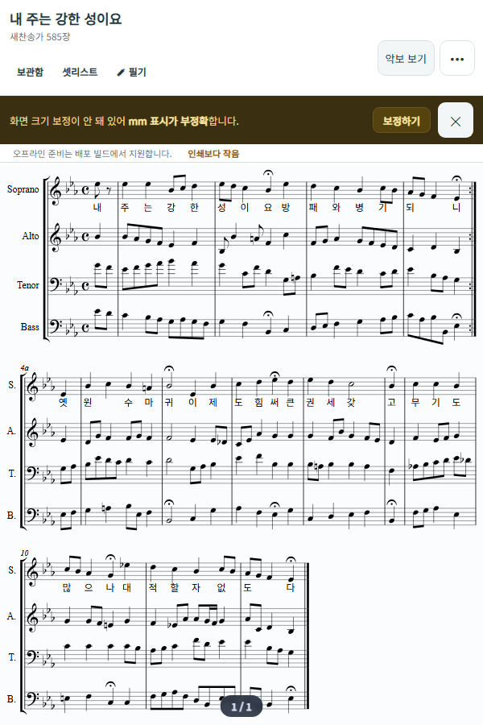

TAILORED BUSINESS SYSTEMS
맞춤형 ERP
업무 관리 시스템
제조 · 유통 · 무역 · 서비스
다양한 업종에 맞춘 개발
다양한 업종에 맞춘 개발
업종별 맞춤 개발업종은 달라도,
업종은 달라도,
업무에 맞는 하나의 시스템.
맞춤형 ERP·업무 관리 시스템
업종과 규모에 관계없이, 각 조직의 운영 방식에 맞는 ERP·업무 시스템을 개발합니다.
프로젝트 상세 보기 ↗SELECTED PROJECTS
업무 시스템 설계부터 자체 서비스와 자동화 구현까지.
RO가 풀어가는 문제와 만드는 과정을 소개합니다.
TAILORED BUSINESS SYSTEMS
업종과 규모에 관계없이, 각 조직의 운영 방식에 맞는 ERP·업무 시스템을 개발합니다.
프로젝트 상세 보기 ↗
개발 화면판매자의 정책을 이해하는 고객응대
CONTENT & DATA
반복 작업 사이의 흐름을 연결합니다.
LET’S BUILD
현재의 업무와 필요한 변화를 알려주세요.